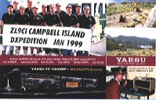
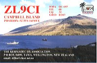
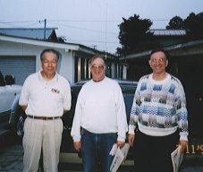
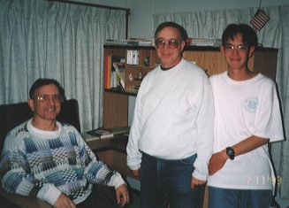

Honolulu Hawaii
【Back Issues Jul.99】
31.Jul.99
(14:00-i) BY-TV 00:00- 49.750 -- *JR6YAG 00:30- 50.037 CW Beacon KH0/W8YAQ 00:55 50.120 CW BV2NT 01:10 50.120 SSB HL5XF 01:24 50.130 SSB DS5ISO 01:33 50.120 SSB XX9AS 01:44 50.125 SSB VR2SIX 02:00 50.075 CW Beacon *KH0/W8YAQ 02:06 50.128 SSB KH0/N3JJ 02:10 50.128 SSB BV2KS 02:35 50.125 SSB DS2SMU 04:37 50.124 SSB DS2MGT 04:40 50.130 SSB HL2IGU 04:43 50.114 CW HL1VAU 04:44 50.115 SSB DS2ECV 06:19 50.135 SSB HL3IUA 06:19 50.110 CW K7IL/KH0 07:07 50.120 CW/SSB KH0/JN1WTK 08:38 50.120 SSB NH0/N7EIU 09:06 50.120 SSB VK6RSX 09:23- 50.304 CW Beacon VK8RAS 09:25- 50.047 CW Beacon ◎ 朝から西方向の国内Esと共に近場のDXが強力に入感。 サイパン(KH0)はピークでは強力だがQSBが 激しく不安定。 夕方から珍しくパース(Perth=OG77)のビーコン・VK6RSX(50.304MHz)が入感していた。
|
30.Jul.99
(14:00-d) VK-TV 00:00 46.172 -- BY-TV 00:30- 49.750 ◎ 00:00z前からVK-TVがかなり強く入感していた。 その後は午前、午後とEsの発生もなく静か。 Esシーズンも既に峠を越えた。29.Jul.99
(14:00-f) BY-TV 06:00- 49.750 -- HL5XF 07:00 50.130 SSB DS1GQS 08:08 50.150 SSB KH0/KF8TW 11:05 50.110 CW VK8MS 13:16 50.110 SSB ◎ 午前中は49.750MHzのTVも上昇しない静かな6m。 28日まで運用していた盛岡クラブに引き続いて、 サイパンの"マリアナリゾートホテル"からKH0/KF8TW(JH3TXR)、KH0/N3JJ(JA3ART)等、京都クラブの メンバーが今日から運用を始めた。 50.120MHzで"CQ Beacon"を出している。28.Jul.99
(13:00-f) BY-TV 00:00- 49.750 -- 9M-TV 00:00- 48.240/260 -- *JR6YAG 01:00- 50.037 CW Beacon VR2SIX 01:15- 50.075 CW Beacon HL5XF 01:21 50.130 CW/SSB DS5KYG 01:24 50.180 SSB WH2M/WH0 01:57 50.120 CW *VR2SIX 04:30- 50.075 CW Beacon *VR2SIX 09:00- 50.075 CW Beacon ◎ 午前中はJA8からJR6(沖縄)の国内を含む1,000Km-3,000Km付近までの範囲がオープンしている。 午後は48MHz帯の9M-TVと共にホンコンのVR2SIXが上昇してくるが、他に"局"は聞こえてこない。 ◎ [T88 Report] 7月21日から25日までPalauから運用したT88KS(JA3AQM)・佐々木さんからのリポートによると、6mが オープンしたのは、22、24、25日の3日間。 T88KSでのQSOはJA=251、KH0=3の合計254(CW/SSB)だった。 22日の最初のオープンでは、07:15zから09:10zの約2時間で北海道から沖縄までの全エリアが入感、こ の日だけで114局とQSO(T88DXのQSOを含む)。 24日は08:17z-10:23zまでに25QSO。最終日となった25日 は朝からオープン、00:50z-02:50zの2時間で146局とQSO。 運用場所となったホテルの近くに"高圧線"があり、ここからと思われるノイズに悩まされ、期待したほ どQSOが出来なかったとの事。 使用RigはIC-756+HL-206V(200W)、アンテナはRadixの4 ele Yagi。 QSLはHome QTHへ。[TNX JA3AQM]

27.Jul.99
(14:00-f) BY-TV 00:00- 49.750 -- VK-TV 00:45- 46.172 -- ZL-TV 00:45 45.250 -- *JR6YAG 00:50- 50.036 CW Beacon WH2M/WH0 04:08 50.120 CW/SSB VR2SIX 05:30- 50.075 CW Beacon BO0M 05:33 50.130 SSB BV3FQ/3 05:55 50.120 SSB *WH2M/WH0 06:00 50.120 SSB/CW ◎ 午前中は弱い国内Esと共に45/46MHzのTVが入感。 午後から聞こえてきたWH2M/WH0の"CQ"は、安定 に入感している。 05:00z頃から西方向のコンデションも上昇。26.Jul.99
(13:00-d) BY-TV 00:00- 49.750 -- ◎ 西方向からの強力なTVのバズや、国内Esも無く静か。 昨日の夕方、連続して入感していたサイパン (KH0)も今日は聞こえない。 ◎ 3月にBanabaからQRVしたT33RDのQSLが届き始めている。 ◎ JA8VE、JF1OCQの両局は7月31日から8月7日の日程でベトナム(Vietnam)からの運用を予定している。 既にコールサインも3W6KS(JA8VE)と3W6HM(JF1OCQ)を取得しており、6mも運用する。予定では7月31日 にホーチーミン市(Ho Chi Minh City=HCMC)に到着、翌8月1日にPhu Quoc Is(GL=OK10XD)に移動する。 Phu Quoc Is(IOTA AS-128)は、首都のホーチーミン市から西に約300Kmの場所。 この島には4日間滞在 の後、HCMCに戻る。 6mの周波数は50.120MHzを使用。 尚、HFは14、18、21、24、28MHz帯でQRVする。 QSLは各局のHome QTHへ。(TNX JF2MBF)25.Jul.99
(13:00-g) BY-TV 22:00- 49.750 -- (24.Jul) BO0M 22:15- 50.120 SSB ↑ WH2M/WH0 00:30 50.120 SSB T88KS 01:00 50.115 SSB/CW VR2SIX 01:08 50.075 CW Beacon HL2IGU 01:50 50.119 SSB DS5ISO 01:57 50.119 SSB *BO0M 02:02 50.122 SSB HL1VAU 02:16 50.105 CW VR2XMT 02:17 50.180 SSB DS5IJG 02:18 50.170 SSB *T88KS 02:42 50.115 CW *JR6YAG 03:00 50.036 CW Okinawa Beacon DS2ECV 04:20 50.135 SSB BY4CYL 06:19 50.148 SSB *WH2M/WH0 07:33- 50.120 CW ◎ 1エリアでの信号はそれほど強くなかったが、早い時間からB0OMが入感した。 午前中は南方向から西 方向までの2,000-3,000Kmの範囲がオープンしている。 KH0とT88は相変わらず良く聞こえている。 サイパンのWH2M/WH0は昨日までに約400局のJAとQSOしたと。24.Jul.99
(22:30-k) BY-TV 00:00- 49.750 -- *JR6YAG 00:00- 50.036 -- Beacon also JA6YBR HL5XF 01:50 50.130 SSB XX9AS 02:34 50.110/125 SSB HL2IGU 02:45 50.120 CW BO0M 03:08 50.111/100 CW *XX9AS 03:23 50.110 SSB BG7OH 03:25 50.110 SSB HL1LTC 03:29 50.125 SSB QSO with BO0M *BO0M 03:37 50.120 SSB OP.BV2NT(QSL BV2KI) HL1JV 05:40 50.110/125 SSB WH2M/WH0 06:50 50.120 CW/SSB HL3IUA 07:06 50.115 CW T88KS 08:28 50.110 SSB *HL5XF 13:10 50.110 CW HL5BWV 13:13 50.120 SSB *BO0M 22:15 50.120 SSB ◎ 早朝から西方向の強力なEsがオープン。 午後から近場のDXが入感してきたがコンデションのアップ ダウンが激しく安定しない。 夕方から入感してきたサイパンのWH2M/WH0は08:10zにQRTするまで強力。23.Jul.99
(12:00-g) BY-TV 00:00- 49.750 -- WH2M/WH0 00:00- 50.120 CW/SSB OP.JE7RJZ(QSL JA7FWR) *JR6YAG 00:00- 50.036 CW Beacon BV2NT 00:12 50.110/120 SSB VR2SIX 02:23- 50.075 CW Beacon HL4GMQ 03:17 50.120 SSB 9M-TV 04:20- 48.240/260 -- *WH2M/WH0 08:50 50.120 SSB ◎ サイパンからWH2M/WH0(OP.JE7RJZ)が今日から運用を開始、早朝からFBに入感している。 マリアナリ ゾートホテルからの運用。 29日まで。22.Jul.99
(23:30-g) BY-TV 00:00- 49.750 -- *JR6YAG 01:00- 50.036 CW Beacon strong HL2IGU 01:59 50.120 CW T88KS 07:40 50.115 CW/SSB QSB OP & QSL JA3AQM T88DX 08:05 50.115 SSB OP & QSL JI3DLI WH2M/WH0 22:40 50.120 CW OP.JE7RJZ(QSL JA7FWR) ◎ 2日続けての雷と、大雨・洪水警報の出た東京地方。 関東の梅雨明けはお預け。 07:30z頃から入 感してきたT88'sは広範囲にQSO出来たが、聞こえているエリアが激しく移動、不安定な入感。 ◎ 今年4月にH40OO、H44OOを運用して6mで貴重なNewエンティティーをサービスしてくれたJK7TKE・福 井さんが、この秋にFO(Austral Is.)へのDX Peditionを計画している。 コンディションが上昇してい るので、FO/A−JA間のオープンは十分期待出来る。 運用地 FO/A(Tubai Is. Australs) 日 程 10月15日−24日 CALL (未定) 周波数 Beacon 50.115MHz 設 備 FT-100(100W) 6ele(50MHz) OP/QSL JK7TKE21.Jul.99
(14:00-f) BY-TV 00:00- 49.750 -- VR2SIX 01:20- 50.075 CW Beacon KH0/JH1HYH 01:28 50.120 CW HL5XF 01:52 50.119 CW BG7OH 02:28 50.120 SSB 9M-TV 05:00- 48.240/260 -- VK-TV 07:30- 46.172/240 -- BV4QW 08:04 50.110 CW *JR6YAG 08:00- 50.036 CW Beacon VK4BRG 08:39 50.110 SSB *BG7OH 08:40 50.110/120 SSB *VR2SIX 09:28- 50.075 CW Beacon BV2NT 08:42 50.120 SSB VR2XLN 08:47 50.120 SSB ◎ 東京地方は午後3時頃から1時間ほど雷を伴う豪雨となり、ワッチどころでは無かった。この荒れ模様 の天候が治まった頃からJR6-JA3、JA8の国内Esと共にVK4が強力に入感。 ◎ CX3AN(Bert)、CX4CR(Mario)は8月5日から23日にかけてFO(French Polynesia) 、ZK1(Cook Is)、 3D2(Fiji)から6mを含むオールバンドでの運用を予定している(日程は表、参照)。 8月という時期的な問題や、ローバンドに力を入れるとの事などから、6mでのQSOは難しいかも知れない。 交通の手段が確保出来れば、3D2の前に、ZK1/N(North Cook Is)からの運用も予定していると。20.Jul.99
(13:00-d) VK-TV 00:00- 46.240 -- BY-TV 03:00- 49.750 -- BV2NT 09:28 50.110 SSB KH0/JH1HYH 09:33 50.120 SSB/CW ◎ 午前中から夕方まで、いつも入感してくる西方向からのTVのバズも無く"文字どおり"6mバンドは静か。19.Jul.99
(13:00-e) BY-TV 00:00- 49.750 -- *JR6YAG 00:00- 50.036 CW Beacon Es JA6 & JA8 BV2NT 04:45 50.120 SSB KH0/JH1HYH 06:57 50.110 CW/SSB *KH0/JH1HYH 07:00 50.500 AM ◎ 午前中は西方向からのTVのバズと、沖縄のビーコン(JR6YAG)が強力。 コンデションが開いていてもQRV してくる局は少ない。 夕方に入感していたサイパンのKH0/JH1HYHは、マリアナリゾートホテルのレンタル シャックからの運用。18.Jul.99
(14:00-f) BY-TV 00:00- 49.750 -- 9M-TV 01:00- 48.240 -- *JR6YAG 01:00- 50.036 CW Beacon & also Es JA6/8. HL3EPH 01:30 50.116 SSB K6MYC/KH6 07:00- 50.110 CW/SSB KH7L 07:25 50.125 CW *K6MYC/KH6 08:45 50.110 CW
◎ 午前中から西方向のバズが強力。 07:00z頃から入感してきたハワイのK6MYC/KH6・Mikeは強力だった。 MikeはIC-706に自作の1KwのリニアーAMP(8877)に7el(M2=6M7JHV)での運用。 同時に出ていたKH7Lはほ とんど"ノイズスレスレ"の信号だった。 K6MYC/KH6は2時間後の09:00z頃まで聞こえていた。17.Jul.99
(14:00-g) BY-TV 00:00- 49.750 -- 9M-TV 00:00- 48.240/260 -- VR2SIX 00:07- 50.075 CW Beacon BG7OH 00:44 50.110 SSB BV2NT 01:36 50.120 SSB BV2PU 02:27 50.110/120 SSB VR2ZXP 03:57 50.110 SSB VR2IL 03:59 50.110 SSB VR2OA 04:00 50.110/115 SSB HL1VAU 06:36 50.118 SSB DS5ISO 06:45 50.125 SSB HL4GMQ 06:47 50.115 SSB ◎ 今年1月にQRVのあったZL9CI(Campbell Island)のQSLが届いている。 総QSO数では歴代の記録を破り 1位となったが、6mでのJAからのオープンは1月15日に短時間あっただけ。 44局がQSO出来たが、環境保護 のために今後はこの島からのQRVは困難になるとのことなので、今回QSO出来た局にとっては"貴重"なエン ティティーとなった。


16.Jul.99
(15:00-d) BY-TV 00:00 49.750 -- 9M-TV 01:00- 48.240/260 -- VR2SIX 02:30- 50.075 CW Beacon BG7OH 03:46 50.110 SSB HL1LTC 14:36 50.110 SSB ◎ 午前中からJR6(沖縄)、VR2方面の西のパスが良く開いていた。 9V1UV・Selvaが17日、18日の両日、 再びQRVを予定している。 周波数は50.115MHz。
|
◎ サイパンのレンタルシャックでお馴染みの旅行会社「TABIX JAPAN 世田谷 旅行倶楽部」が「サイパンDXペディショントレーニングツアー」の参加者を募集 している。開催の日時は8月22日から28日で、この期間を2班に分けて行われ る。 数々のDXCCニューエンティティーを開拓してきたDXer・OH2BH(martti J.Laine)やK5FUV(Bill Kennamer)両氏によるDXペディションの体験談、運用の 実戦指導などが予定されている。詳細は下記のホームページ参照。 (写真はK5FUV Bill Kennamer氏) http://plaza11.mbn.or.jp/~TABIXSETAGAYA/ |
15.Jul.99
(13:00-d) BY-TV 00:00- 49.750 -- BV2NT 04:52 50.110 SSB DS1GQS 06:07 50.110 SSB 9M-TV 07:00- 48.240/260 -- VR2SIX 07:15- 50.075 CW Beacon VR2LC 08:13 50.105 CW ◎ 一日中、西方向からのTVのバズが強力に50MHz帯に入り込んでいた。 午前中はJR6(沖縄)、午後からJA8 方向の国内Esがオープン。 HL/DSが強力に入感。 ◎ 今年のEsシーズンも近場のDXは大体出揃った感じだが、不思議なことに昨年までEsシーズンを賑わして いたロシア(UA0)の局が今年は聞こえない。 なぜ出てこないのか、今のところ理由は不明だが、想像する に"6mの免許"の問題が関係しているようだ。 昨年のこの時期、クラスター等にUA0の入感がリポートされる度に、UA局からと思われる「6mのUA局は全 てパイレート」と"内部告発"的な書き込みが頻繁に成されていたのを記憶している局も多いのでは？。 それでも昨年はコンデションが落ち込むまで聞こえていたのだが、今年になって"ピタリ"とQRVが止まって しまった。 UA0(Asiatic Russia)はヨーロッパと同じ「Region 1」なので、1992年まで6mは"割り当てがない"との 理由で運用は出来なかった。 その後"特別免許"や"正式な免許"でQRVする局も増え、JAからEsシーズンの 格好のQSO相手となっていた。 今年になって急にQRVが無くなってしまった本当の理由は何なのだろうか？。 今年はUゾーンのUN3やUR5とQSO出来るなど、大陸方面の入感が期待されていただけに、このままQRVが制限 されてしまったのでは淋しい。14.Jul.99
(14:00-e) BY-TV 00:00 49.750 -- HL2DJW 01:34 50.110 CW JT1KAA 05:10 50.110 CW *JT1KAA 05:38 50.112 SSB (T30JH 08:45 50.110 SSB JA7) ◎ 午前中はJA8、午後からJA6方向の国内Esが強力。 西方向のバズと共に入感したJT1KAAも強力だった。 ◎ 6月20日に"JA6でウクライナ(UR5)とQSOした"との情報が流れたが、JF6EZY・田中さんから、同日の 15:32zにUR5ZEL(Yuri)と50.108MHzのCWでQSOした、とのリポートが届いた。 YuriのQSLはまだ受け取ってはいないが、mailを通じてQSOは確認されているとの事。このQSOは6m初の JA-UR5(Ukraine)の記録となる。 ◎ KH0(Saipan)のレンタルシャックにタワーが上がった。詳細は下記のホームページを参照 http://plaza11.mbn.or.jp/~TABIXSETAGAYA/13.Jul.99
(10:00-c) BY-TV 00:00- 49.750 -- UN3G 06:00 50.110 CW VK4JH 07:37 50.110 CW/SSB BG7OH 09:13 50.110 SSB JT1KAA 09:28 50.110 CW ◎ 西方向からの強力なTVのバズと共にJAからUN3、JT1、BG7がオープンしたが、入感している範囲は非常に 狭いものだった。 今日のVK4は早い時間から1エリアでも強力だった。 ◎ 今日は珍しく早い時間に入感してきたUN3Gだが、Valからのリポートによると、昨夜(12:10-13:44z)の JAとのオープンでQSOしたのは54局だった。 5月9日から7月5日までの6mのQSOは283、26 Ctry。 内訳はJA 局が160、残る123はヨーロッパとのQSO。12.Jul.99
(14:00-d) BY-TV 05:00- 49.750 -- VK-TV 07:30- 46.172/240 -- (VK4JH 07:45 50.110 SSB JA7.8) (T30JH 09:36 50.110 SSB JA8) UN3G 13:01 50.110 CW ◎ VK2GJH・JackはC21JHの運用を終え、現在はT30JHからQRVしている。 今のところ入感しているのは北 日本だけ。 この時間帯はVK4なども入感してくるがJA8がQSOしている相手は1エリアでは聞こえない。 昨日は07:00z頃に青森県下を走行中のモービルでもVK4ABW、VK4JHなどが強力に入感していたので、この 時間帯にはJA7、8エリアへのパスは良く開いている？。 ◎ 7月10日の"ヨーロッパ大オープン"に"参加"する事は出来なかったが、移動中のモービルから西日本の 局のパイルをモニターする事は出来た。 この日のクラスターも近場のDXを含め、久しぶりに賑やかな書き 込みだった。 この日のヨーロッパ入感の"目玉"だったSM7FJEからのリポートによると、この日04:20zから始まったJAの オープンでQSO出来たのは、JA1=8、JA2=11、JA5=1で、TVのQRMがあったもののピークではS9で入感する局 もあったとの事。 このコンデションは1時間ほど続き一旦落ちてしまったが、1時間ほどして2度目の上昇 があり、更にJA1=1、JA3=3、JA4=4、JA5=3、JA6=2局をログインする事が出来たと。(TNX JR3HED) ◎ 山形の6SGミーティングの帰り(と言っても東京から東北縦貫道だけでも630Km、東京→山形と同じ距離 だが)、青森県・三沢市から6mにアクティブにQRVしている7J7ACX(KG6JDX)、7J7ADB(ex7J1AEJ、KG6DX)の 二人の"Joe"を訪問して来ました。 米軍基地に勤務先のある二人は、三沢空港にほど近い外国人専用の住宅に家族と一緒に住んでいます。 三沢市には"7J7"のコールサインでQRVしている局は現在10局程との事でしたが、6mの局は"2×Joe"だけ。 10日のヨーロッパは三沢市では聞こえなかったとのこと。(De JA1RJU)


10.Jul.99
(09:00-a) BY-TV 00:00- 49.750 -- (SM7FJE 04:53 50.110 CW) JA1-6.9.0) (YO4AUL 06:20 50.110 CW JA1) (OZ2LDO 06:38 50.106 CW) (XX9AS 08:25 50.130 SSB) (JT1CJ 08:46 50.110 SSB) ◎ 7月10日、11日の両日、山形県東村山郡中山町で、第28回東北6SG(6m SSB Group)のミーティングが開 催される。 今回は1エリアからの参加局を含め、60余局の参加が予定されている。 ◎ [お知らせ] 東北6SGミーティングに参加のため、この間のリポートは休止します。09.Jul.99
(13:00-d) BY-TV 23:00- 49.750 -- 9M-TV 02:30- 48.240/260 -- KL7IKV 05:45 50.116 CW NL7Z 05:46 50.110 CW KL7FZ 05:57 50.125 SSB BV2PU 06:26 50.110 CW VR2XMT 12:30 50.110 SSB ◎ 午前中は西方向からのバズが強力。 05:40z頃からKL7が入感してきた。このオープンから3時間ほど前 にはアラスカとVE7、W6/7がFBにオープンしていたもよう。 KL7は06:05z頃にフェードアウト。 ◎ KH0(Saipan)から運用するJA局に人気のマリアナリゾートホテルの"レンタルシャック"で工事中だった クランクアップ・タワーが出来上がった。 来週早々にはアンテナを取り付け、動作テストが行われる。08.Jul.99
(14:30-d) BY-TV 00:00- 49.750 -- 9M-TV 08:30- 48.240 -- JT1FBX 12:20 50.110 SSB QSL JG5PJJ HL1LTC 14:10 50.110 CW ◎ 西方向からのTVのバズも少なく"夕方まで"は静かな6m。 11:00z過ぎからJT1FBX(OP JG5PJJ)が入感。07.Jul.99
(10:00-c) BY-TV 00:00- 49.750 -- BV2NT 07:00 50.110 SSB DS4CNB 08:17 50.110 CW *BV2NT 08:34 50.110/120 SSB ◎ 強力な西方向からのバズがバンドに広がっているだけで、DXの入感は昨日同様、HL/BVだけ。 ◎ 新住所からQRVを始めたサモアの5W1SAに付いては、7月4日のこの欄でお伝えしたとおりだが、今度は この局のQSLマネジャーを引き受けているJH7OHF/1・小野さんが引っ越すことになったため、5W1SA宛の QSLは新しい住所が決まるまで送らないでほしいと。 ◎ KH0(Saipan)から運用するJA局に人気のマリアナリゾートホテルの"レンタルシャック"にクランクアッ プ・タワーが設置される事になった。 タワーが設置される事で、アンテナ作業がより"安全で楽に"なる。 既に基礎工事も終わり今月中旬頃には使用可能となる。 タワー設置までの"経緯"に付いては[Saipan 99.6 KH2K/AH0]で紹介されている。06.Jul.99
(15:00-b) VK-TV 23:00- 46.172 -- BY-TV 00:00- 49.750 -- BV2PU 03:16 50.110 SSB HL5XF 03:38 50.130 SSB ◎ 午前中から西方向からのTVのバズが強力に入感していたが、DXは数少ないBV/HLだけ。 ◎ 7月4日、JARL宛にHARTS(Hong Kong Amateur radio Transmiting Society)のIARU担当者から、6m の運用に関するVR2(ホンコン)の局とJA局とのトラブルに対するお詫びの文書が届いた。 E-Mailで届いた内容を要約すると、7月1日に50.110MHzでJAが5B4とQSO！しているところに、VR2Z**が混 信を与え、度重なるJA局からの"QSY"の指示に従わなかった不慣れなオペレートを陳謝するというもの。 7月1日は夕方からVR2が強力に入感していたので、この時間帯に5B4がオープンしていたとすれば混信に なっていた可能性はある。 ホンコンがオープンすると沢山の局が出てきて賑やかなのだが、最近は入感し てもDXとしての"有難味"が無くなりつつあるので、運用に対する"風当たり"も強くなるのだろう。 VR2の局の中には6mの運用に不慣れな局も多く、50.110MHz付近に居座る局に対する今回の様なトラブルも 懸念されていた。 ただ、この問題はVR2だけに限った事ではなく、以前からもオーストラリアや太平洋地 域の比較的オープンの多いエンティティーとのトラブルは少なくなかった。 今回どの程度の"摩擦"があ ったのか定かではないので安易にコメントは出来ないが、"50.110MHz問題"はわれわれJA局自身にも言え る事なので、妨害(故意では無いと思うが)になったからと言って、事を荒立たせるのは得策ではない。 5B4とQSOしていたJA局が誰なのか確認されていないが、IARUの担当者(IARU Liaison Officer)の手を煩 わすほどの問題では無かったのでは？。05.Jul.99
(15:00-e) BY-TV 00:00- 49.750 -- JT1FAL 02:46 50.110 CW QSL via JA0IXW P29KFS 12:06 50.110 SSB ◎ 午前中は49.750MHzのTVバズと共にJA8がEsで強力に入感。 02:00z頃にJA7/0エリアで入感していたVR2 は、1エリアでは聞こえなかった。 西方向のバズの中から聞こえてきたモンゴルのJT1FAL(OP JA0IXW)の コンデションは、7エリアから移ってきたが、1エリアに聞こえていたのは03:00z前後の20分程。 ◎ 久々にJA局によるニューエンティティーからの運用だったH40OO(Temotu Is)のQSLの発送が始まった。 H4000の運用の模様は、JK7TKE・福井さんのホームページ( http://plaza29.mbn.or.jp/~jk7tke/ )に紹 介されている。04.Jul.99
(13:00-d) BY-TV 00:00- 49.750 -- JD1BIA/JD1 04:00 50.260 SSB (SM7FJE 07:30 50.110 CW JA6 hrd) JT1FAJ 08:32 50.110 CW QSL via JA0HC ◎ 06:00zには、昨日から続いていたコンテストの"喧騒"も終わり、静かな6mに戻った。 毎度の事ながら 50.110MHz付近は沢山の"スプリアスの混信"で、DXをワッチする気も無くなる。 某誌のコンテスト担当者が「00:00時」は「00:00:59」までと、"迷"解説をしていたが、5分過ぎても "CQ TEST"と"599**M..."が聞こえていたところを見ると、コンテスターにとって"59秒"なんて"大した問 題"ではなかったのかも???。 ◎ サモアの 5W1SA・佐久間さんからの連絡によると、4月以降は引っ越しのためオールバンドで停波して いたが、7月3日に新しいシャックにQSYしたとの事。 新しいQTHは首都アピアから東に3KmのFagalii空港 の近くで、ロケーションは小高い丘の上(50-100m程度)。 近日中にHFと6mのアンテナを上げてオンエアの 体制を整えたいと。 旧シャックは海抜数メートルの地帯だったので、新シャックからのQRVには期待出来 そう。03.Jul.99
(13:00-d) BY-TV 22:55- 49.750 -- 02.Jul BV2NT 23.55 50.110 SSB ↓ *BV2NT 03:57 50.110 SSB JD1BIA/JD1 07:19 50.130 SSB *BV2NT 08:49 50.110 SSB ◎ 午前中からEsによる沖縄、BV等の西方向の近場のDXが入感。 夜は国内Esで北(JA8)方向が強力。02.Jul.99
(14:00-e) VK-TV 23:00- 49.172 -- ↑ VK4ABW 23:00 50.110/120 SSB VK-TV 23:25- 49.240 -- 01.Jul VK4BLK 23:27 50.110 SSB/CW BV2NT 23.36 50.110/120 SSB ↓ *VK4ABW 00:00 50.120 SSB VK4FNQ 00:00 50.120 SSB ◎ 昨日同様、朝のVK4が強力。 F2層の伝搬がEs層でマスクされない時間帯に聞こえているものだが、今 日はVK4とBVが同時に入感。 VK4とBV間のパスが無いので同じ周波数でJAを相手にQSOしていた。 午後は TVのバズもなく静か。01.Jul.99
(12:00-e) VK-TV 23:00- 49.172 -- ↑ VK4BRG 23:01 50.110 SSB 30.Jun VK4ABW 23:32 50.110 SSB ↓ BY-TV 09:00- 49.750 -- VR2ZGD 09:08 50.110/150 SSB VR2ZDH 09:09 50.120 SSB VR2SIX 09:10 50.075 CW Beacon VR2BG 09:13 50.099 CW VR2ZGC 09:18 50.130 SSB VR2IL 09:19 50.140 SSB VR2LC 09:19 50.150 SSB BV2DP 09:36 50.115 SSB VR2XMT 10:40 50.110 SSB XX9AS 11:00 50.110 SSB ◎ 午前中は49.750MHzのTVのバズも聞こえていない。 替わりに46.172MHzのVK-TVと共にVK4'sが入感して きた。 VK4ABWはヨーロッパにアンテナを向けていると言っていたが、この時間にパスがあるのだろうか？ 夕方になって急激に49.750MHzが上昇、沖縄のビーコン(JR6YAG=50.036MHz)と共にVR2'sが強力に入感して きた。 ◎ マカオのXX9ASがKU9Cから贈られた6mのRig(機種は不明)でQRVしている。 すでにVR2LC、JR6VSPなどが QSOしている。 ◎ JR0CGJ・清水さんは7月4日から6日まで、モンゴルからJT1FAKのコールサインで運用する。 周波数は 50.110MHz付近を使用。(TNX JH0MHE)
| Index | Back Issues |
|---|---|
|
最新情報へ戻る |
 6mを運用するDX-Pedi
6mを運用するDX-Pedi